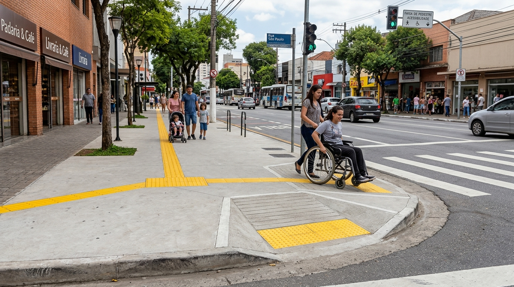

Acessibilidade na rua e no transporte
Sair de casa, ir ao trabalho, à escola ou ao médico depende de calçadas, travessias e transportes que todos consigam usar. Quando a cidade tem barreiras, muita gente perde o direito de ir e vir.

Calçadas e travessias
- Faixa livre: a calçada precisa ter um caminho sem obstáculos, como postes, lixeiras, plantas e mesas de bar. A NBR 9050, norma da Associação Brasileira de Normas Técnicas (ABNT), indica largura mínima de 1,20 m para essa faixa.
- Superfície firme e regular: buracos e pisos soltos causam quedas e travam cadeiras de rodas e carrinhos.
- Rampas nas esquinas (rebaixamento da calçada) ligam a calçada à rua e ajudam cadeirantes, idosos, carrinhos de bebê e carrinhos de compras.
- Travessias elevadas e faixas de pedestres bem pintadas deixam a travessia mais segura.
- Semáforo sonoro avisa por som quando é seguro atravessar, e é essencial para pessoas cegas ou com baixa visão.
Piso tátil
O piso tátil é o piso com relevo, geralmente amarelo, que aparece em calçadas, estações e prédios públicos. Ele orienta pessoas cegas ou com baixa visão, que sentem o relevo com os pés e com a bengala. Existem dois tipos:
- Piso direcional: tem barras paralelas e mostra o caminho a seguir.
- Piso de alerta: tem pequenos círculos em relevo e avisa sobre um perigo ou uma mudança, como o início de uma rampa, uma escada ou uma travessia.
Transporte público
- Ônibus com elevador ou rampa, espaço reservado para cadeira de rodas e cinto de segurança no local.
- Avisos sonoros e visuais com o nome da próxima parada, para pessoas cegas e surdas.
- Metrô e trem com elevadores, escadas rolantes, piso tátil e mapas em braille.
- Assentos preferenciais para pessoas idosas, gestantes, pessoas com deficiência e pessoas com criança de colo.
- Atendimento prioritário em filas, bancos, terminais e outros serviços, garantido por lei.
Vagas reservadas
A lei determina que estacionamentos abertos ao público reservem vagas para pessoas com deficiência e para pessoas idosas, perto das entradas e com sinalização. As vagas para pessoas com deficiência são mais largas para permitir a abertura total da porta e o uso da cadeira de rodas. Usar essas vagas sem necessidade tira a autonomia de quem depende delas.
Cão-guia
Pessoas cegas ou com baixa visão podem ser acompanhadas por um cão-guia. A Lei nº 11.126/2005 garante o direito de entrar e permanecer com o cão em locais públicos e privados de uso coletivo, como ônibus, lojas, restaurantes e hospitais.
Como ajudar com respeito
- Pergunte antes de ajudar, como em “Posso ajudar?”. Nem sempre a pessoa precisa.
- Fale diretamente com a pessoa, e não com quem está acompanhando.
- Não segure ou empurre a cadeira de rodas sem avisar, nem toque na bengala ou no cão-guia.
- Ao guiar uma pessoa cega, ofereça o braço e descreva o caminho.
- Não estacione na calçada, na rampa ou na faixa de pedestres.